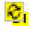
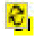

Design Intent Synchronization
Syncing updates design intent changes in the schematic and layout views, and ensures that design intents in both systems are fully synchronized.
Update Verification Before Syncing a Design Intent
Any design intent changes made on the schematic or layout views result in the changes being marked in the other system by a Sync icon  appearing in the Navigator beside each of the amended design intents. These icons are temporary and draw attention to those design intents that have been updated and that require to be synced. The Sync button on the Design Intent toolbar is also enabled.
You can review individual design intent updates before syncing by visiting the Edit Design Intent Form for each design intent with a Sync icon and reviewing the Notes of the relevant section. If you are reviewing changes made in Layout XL, any updates are made to the lower section of the form. Changes made within Schematics XL are made to the upper and middle sections of the form.
After reviewing the updates for the design intents, you can sync the view.
Schematic and Layout View Synchronization
To sync a schematic or layout view, you must have the same cellview open in both Schematics XL and Layout XL.
Any design intent changes made on the schematic or layout views result in the changes being marked in the other system with a Sync icon  appearing in the Navigator beside each of the amended design intents. These icons are temporary and draw attention to those design intents that have been updated and that require to be synced. The Sync button on the Design Intent toolbar is also enabled.
Alert for Synchronization Required in Schematic
It is possible to preview an alert for sync required on design intents without having the need of schematic and layout views to be opened together. This means that you can preview sync required on design intents with only schematic view opened. To preview the design intents that have a sync required alert on them, use the Check and Save button on the toolbar. With the use of Check and Save, the design intent that has a sync required gets an icon for pending sync in the navigator and on toolbar, as shown in the following figure.
Related Topics
Update Verification Before Syncing a Design Intent
Schematic and Layout View Synchronization
Syncing Design Intent When Schematic and Layout are Open
Syncing Design Intent When Only Schematic is Open
Navigator Interaction with Design Intent
Return to top